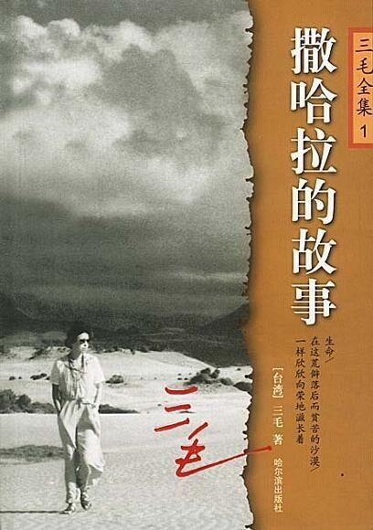

书评
或许每个人都曾向往过流浪，可是那不过是年少轻狂时不食人间烟火的想法，面对生存的困境，总会发现流浪并没有自己想象中的美好，然后呢？失望？厌世？颓废？这些你都没有，撒哈拉并不是你想象中的撒哈拉，可是你从来没有改变过对它的爱，将你的青春献给它，无怨无悔。在你的文字中，我从未看到一丁点埋怨的痕迹，你镇静地、勇敢地、怀着一颗美好的心，忘记了恶劣的环境，而被那广袤的自然，美好的沙漠风光深深的吸引。
去探索那奇特的风俗、去解开撒哈拉威心灵的密码，去追随属于前世的乡愁——提着照相机勾魂摄魄，提着药箱悬壶济世，用棺材木头将小屋装扮成爱的家园，给无知的撒哈拉女子讲课，把爱献给每一个人，无论他是军官，是工人，是地主，还是奴隶，不管他们懂不懂得感恩，你总是一如既往的悲天悯人。